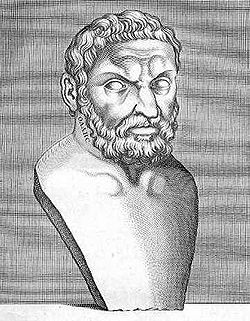
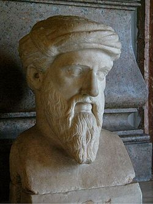
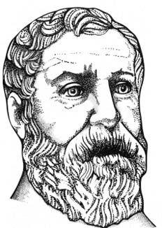
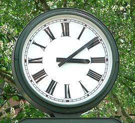
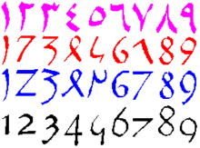
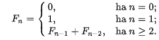

Matematika
Thálész
Milétoszi Thalész (Milétosz, Kr. e. 624 körül – Kr. e. 546 körül). A hét bölcs egyike, a matematika
és filozófia atyja, a materialista milétoszi filozófiai iskola első képviselője, a legkorábbi görög
természetfilozófus. Ő az első olyan görög matematikus, akinek neve fennmaradt.
Thalész (görögül: Θαλης) a kis-ázsiai Milétoszban született a föníciai Examinosz és a kár származású
Kleobuliné gyermekeként,[1] előkelő családban. Olajjal kereskedett, beutazta az akkor ismert művelt
világot Mezopotámiától Egyiptomig. Politikai tanácsadóként is ismert, például az ión városok
szövetkezését támogatta a perzsa fenyegetés ellensúlyozására. Elméleti ismereteit a gyakorlatban is
kamatoztatta, így már életében nagy elismerésre tett szert. Az olümpiai játékok megtekintése közben
halt meg.

Püthagorasz
Szamoszi Püthagorasz (ógörögül: Πυθαγόρας, latinul: Pythagoras, a matematikában meghonosodott, nem szabályos átírással Pitagorasz), (Kr. e. 570 körül – Kr. e. 495) ión származású, preszókratikus filozófus és matematikus, a püthagoreus filozófiai iskola megalapítója. Nevét ma a matematikában a Pitagorasz-tétel viseli (amit a maga általánosságában valószínűleg ő bizonyított először[1]). Tanítványaival máig ható eredményeket ért el a csillagászatban, a matematikában és a zeneelméletben.

Heron
Alexandriai Hérón (10 körül – 75 körül) egyiptomi hellén gépész és matematikus. Alexandriából származott, Ktészibiosz tanítványa volt. Igen sok munkát írt, abból több fennmaradt, így „Peri thé automatopoiktikhón”, hogyan kell automatákat készíteni; „Pneumatika”, a fúvókészülékekről (két könyvben, ennek egy kézirata, a konstantinápolyi egykor Mátyás király könyvtárában volt); „Belopoika”, a nyílpattantyúkról; „Keirobalisztrasz kataszkené kai szummetria”, a kézi parittyagép szerkezetéről és arányosításáról; „Peri dioptrasz”, a dioptráról; stb. Egyik első művelője volt a geodézia tudományának is. A matematikában az ő nevéhez fűződik a Hérón-képlet.

Római számok
A római számírás az ókori Rómából származó alfabetikus számjelölési rendszer. A rendszer elve szerint néhány kiválasztott betűnek számértéket adnak, és ezek kombinációival írják le a számokat. A római számrendszer additív számábrázolási rendszer, amely azt jelenti, hogy egy szám értékét a jelek összevonásából lehet létrehozni. A felhasznált betűk a latin ábécéből származnak. Összesen hét betűt használnak:
I = 1,
V = 5,
X = 10,
L = 50,
C = 100,
D = 500,
M = 1000.

Arab számok
Hindu–arab számírás alatt a számoknak arab számjegyekkel (további elnevezéseik még a hindu–arab számjegyek, indiai számjegyek, hindu számjegyek, nyugat-arab számjegyek, európai számjegyek vagy nyugati számjegyek) történő leírását értjük. Manapság világszerte ez a számok legelterjedtebb reprezentációja. A matematika fejlődésében fontos mérföldkőnek számítanak. Jellegzetessége a helyiérték alapú, általában decimális rendszer a következő számjegyekkel: 0, 1, 2, 3, 4, 5, 6, 7, 8, 9.

Fibonacci számok
A Fibonacci-számok (ejtsd: fibonaccsi) a matematikában az egyik legismertebb másodrendben rekurzív sorozat elemei. A nulladik eleme 0, az első eleme 1, a további elemeket az előző kettő összegeként kapjuk.
A Fibonacci-számok végtelen, növekvő sorozatot alkotnak; ennek első néhány eleme a nulladiktól kezdve 0, 1, 1, 2, 3, 5, 8, 13, 21, 34. Fibonacci-számok több nagy listája is szabadon letölthető az internetről.
